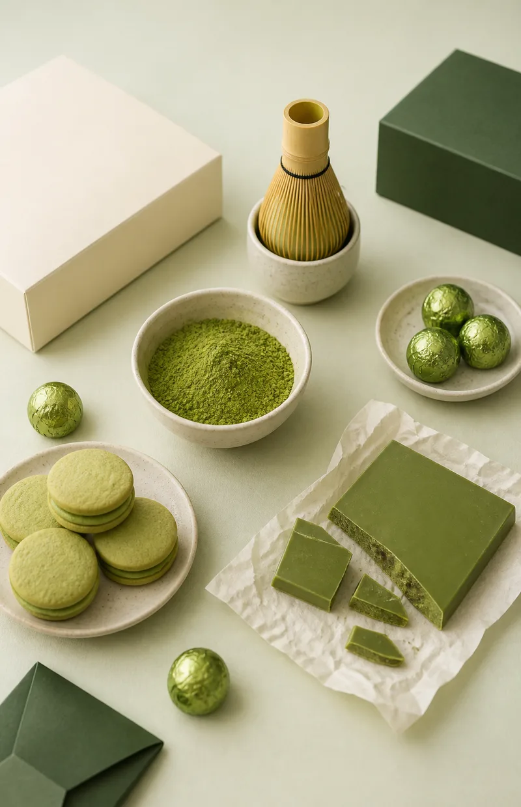
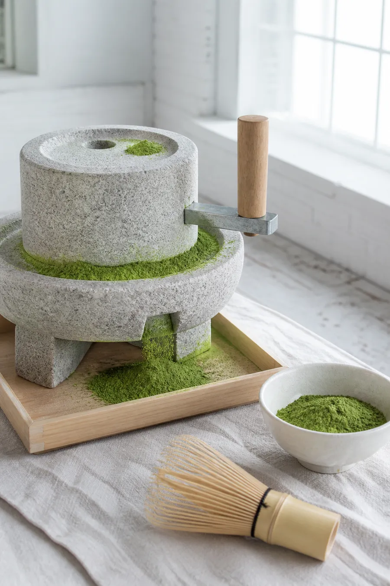

雪翠のはじまり
雪翠は1978年、静岡市清水区の八坂で洋菓子店として店を開きました。最初によく売れたのは、粉糖をたっぷりまとわせた丸いクッキーです。白い粉をかぶった姿を近所の方が「雪玉」と呼んでくれて、それがいまのボンボン「雪玉」の名前になりました。
2009年に店を建て替えて、チョコレートを中心にしたショコラトリーとして出直しました。白いチョコレートの雪と、静岡の茶畑の翠。洋菓子店の頃からあった名前ですが、抹茶を扱うようになって、ようやく名前に中身が追いついたように思っています。

雪翠は1978年、静岡市清水区の八坂で洋菓子店として店を開きました。最初によく売れたのは、粉糖をたっぷりまとわせた丸いクッキーです。白い粉をかぶった姿を近所の方が「雪玉」と呼んでくれて、それがいまのボンボン「雪玉」の名前になりました。
2009年に店を建て替えて、チョコレートを中心にしたショコラトリーとして出直しました。白いチョコレートの雪と、静岡の茶畑の翠。洋菓子店の頃からあった名前ですが、抹茶を扱うようになって、ようやく名前に中身が追いついたように思っています。

抹茶のチョコレートは、つくるほど引き算になっていきます。砂糖を減らし、乳の香りを抑えて、最後に残るのが茶の渋みと香りになるように。
奥霧園さんの茶は、年ごとに表情が違います。毎年夏に畑を歩き、その年の合組を味見してから、ボンボンの配合を決め直しています。去年とまったく同じ味にはなりません。それを楽しみにしてくださる方がいることが、いちばんの励みです。
シェフショコラティエ朝比奈 律
静岡市生まれ。東京の洋菓子店とフランス・リヨンのショコラトリーで修業し、2012年に雪翠へ。2018年からシェフショコラティエを務める。
抹茶は本店の工房で、その日に使う分だけを石臼で挽きます。挽いてから仕込みに入るまでを半日以内にしています。
甘さで抹茶を包み込まないこと。碧号を使うボンボンは、白いチョコレートの割合をあえて控えめにしています。
抹茶のコレクションは秋から冬にかけてだけ。新茶の香りが落ち着く頃に合わせて、毎年9月に仕込みを始めます。